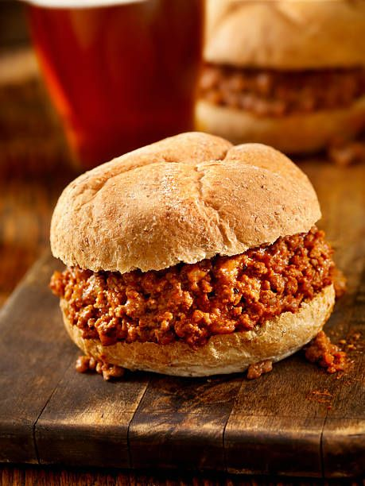

Home
Mississippi Sloppy Joes

These Mississippi sloppy joes combine the bold, tangy flavors of Mississippi pot roast with the ease of classic sloppy joes. Made with ground beef, ranch seasoning, au jus mix, onion, and pepperoncini peppers, they’re a quick, family-friendly dinner everyone will love.
Mississippi sloppy joes
- 1 tablespoon olive oil
- 1/2 cup finely chopped onion
- 1 pound lean ground beef, or more to taste
- 1 (1 ounce) packet ranch seasoning mix
- 1 (1 ounce) packet dry au jus seasoning mix
- 1/2 cup chopped pepperoncini peppers
- 2 tablespoons brine, or more to taste
- 3/4 cup water
- 1/2 teaspoon ground black pepper
- 2 tablespoons ketchup
- 6 burger buns
Steps
- Heat oil in a large skillet over medium-high heat. Add onions and cook, stirring often until softened, about 2 minutes. Add ground beef and cook, crumbling with a spoon until browned and crumbled, about 5 minutes.
- Add ranch seasoning, au jus mix, pepperoncini, pepperoncini brine, water, pepper, and ketchup, and stir to combine. Bring mixture to a simmer. Reduce heat and simmer until thickened and saucy, 5 to 7 minutes.
- Divide mixture among buns and serve immediately.